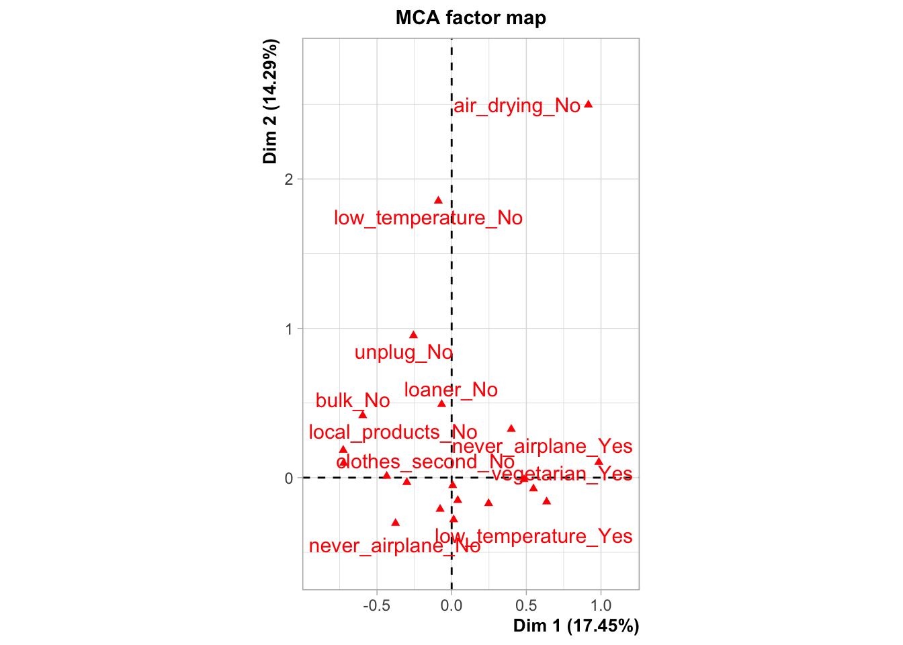
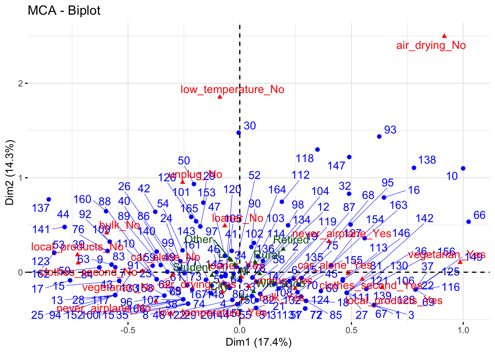

Session 8 : FactoMineR
Moonbin Jo
res.mca1 <- MCA(data_final[,2:11])## Warning: ggrepel: 9 unlabeled data points (too many overlaps). Consider
## increasing max.overlaps
res.hcpc1 <- HCPC(res.mca1, graph = FALSE)
res.hcpc1$data.clust$clust %>% summary()## 1 2 3 4
## 70 15 69 13res.hcpc1$desc.var$test.chi2## p.value df
## loaner 1.127085e-33 3
## air_drying 4.690901e-25 3
## clothes_second 6.103544e-12 3
## local_products 1.918971e-11 3
## low_temperature 2.800499e-08 3
## car_alone 3.761892e-06 3
## never_airplane 2.484578e-04 3
## vegetarian 8.436801e-04 3
## unplug 5.598885e-03 3
## bulk 1.153036e-02 3res.hcpc1$desc.axes$quanti.var## Eta2 P-value
## Dim.2 0.64745007 1.036417e-36
## Dim.1 0.57845466 2.079096e-30
## Dim.3 0.45102547 4.109580e-21
## Dim.5 0.27154314 3.309434e-11
## Dim.4 0.08371099 2.531919e-03res.hcpc1$desc.var$category## $`1`
## Cla/Mod Mod/Cla Global p.value
## clothes_second=clothes_second_No 73.61111 75.714286 43.113772 2.688972e-13
## local_products=local_products_No 69.23077 77.142857 46.706587 1.289060e-11
## car_alone=car_alone_No 60.22727 75.714286 52.694611 3.631780e-07
## loaner=loaner_Yes 46.35762 100.000000 90.419162 9.520569e-05
## vegetarian=vegetarian_No 49.21875 90.000000 76.646707 4.216901e-04
## never_airplane=never_airplane_No 54.65116 67.142857 51.497006 6.286832e-04
## bulk=bulk_No 59.18367 41.428571 29.341317 4.172191e-03
## air_drying=air_drying_Yes 44.15584 97.142857 92.215569 4.470082e-02
## air_drying=air_drying_No 15.38462 2.857143 7.784431 4.470082e-02
## bulk=bulk_Yes 34.74576 58.571429 70.658683 4.172191e-03
## never_airplane=never_airplane_Yes 28.39506 32.857143 48.502994 6.286832e-04
## vegetarian=vegetarian_Yes 17.94872 10.000000 23.353293 4.216901e-04
## loaner=loaner_No 0.00000 0.000000 9.580838 9.520569e-05
## car_alone=car_alone_Yes 21.51899 24.285714 47.305389 3.631780e-07
## local_products=local_products_Yes 17.97753 22.857143 53.293413 1.289060e-11
## clothes_second=clothes_second_Yes 17.89474 24.285714 56.886228 2.688972e-13
## v.test
## clothes_second=clothes_second_No 7.309120
## local_products=local_products_No 6.769861
## car_alone=car_alone_No 5.087310
## loaner=loaner_Yes 3.902496
## vegetarian=vegetarian_No 3.526124
## never_airplane=never_airplane_No 3.418928
## bulk=bulk_No 2.864841
## air_drying=air_drying_Yes 2.007459
## air_drying=air_drying_No -2.007459
## bulk=bulk_Yes -2.864841
## never_airplane=never_airplane_Yes -3.418928
## vegetarian=vegetarian_Yes -3.526124
## loaner=loaner_No -3.902496
## car_alone=car_alone_Yes -5.087310
## local_products=local_products_Yes -6.769861
## clothes_second=clothes_second_Yes -7.309120
##
## $`2`
## Cla/Mod Mod/Cla Global p.value v.test
## loaner=loaner_No 93.75 100 9.580838 1.824721e-20 9.272126
## loaner=loaner_Yes 0.00 0 90.419162 1.824721e-20 -9.272126
##
## $`3`
## Cla/Mod Mod/Cla Global p.value
## local_products=local_products_Yes 65.16854 84.05797 53.293413 8.432689e-12
## clothes_second=clothes_second_Yes 61.05263 84.05797 56.886228 1.289515e-09
## low_temperature=low_temperature_Yes 47.58621 100.00000 86.826347 2.676024e-06
## car_alone=car_alone_Yes 59.49367 68.11594 47.305389 6.588210e-06
## loaner=loaner_Yes 45.69536 100.00000 90.419162 1.137824e-04
## air_drying=air_drying_Yes 44.80519 100.00000 92.215569 6.876296e-04
## bulk=bulk_Yes 49.15254 84.05797 70.658683 1.310250e-03
## vegetarian=vegetarian_Yes 61.53846 34.78261 23.353293 4.134122e-03
## vegetarian=vegetarian_No 35.15625 65.21739 76.646707 4.134122e-03
## bulk=bulk_No 22.44898 15.94203 29.341317 1.310250e-03
## air_drying=air_drying_No 0.00000 0.00000 7.784431 6.876296e-04
## loaner=loaner_No 0.00000 0.00000 9.580838 1.137824e-04
## car_alone=car_alone_No 25.00000 31.88406 52.694611 6.588210e-06
## low_temperature=low_temperature_No 0.00000 0.00000 13.173653 2.676024e-06
## clothes_second=clothes_second_No 15.27778 15.94203 43.113772 1.289515e-09
## local_products=local_products_No 14.10256 15.94203 46.706587 8.432689e-12
## v.test
## local_products=local_products_Yes 6.830996
## clothes_second=clothes_second_Yes 6.068698
## low_temperature=low_temperature_Yes 4.694238
## car_alone=car_alone_Yes 4.506576
## loaner=loaner_Yes 3.859149
## air_drying=air_drying_Yes 3.394464
## bulk=bulk_Yes 3.213725
## vegetarian=vegetarian_Yes 2.867742
## vegetarian=vegetarian_No -2.867742
## bulk=bulk_No -3.213725
## air_drying=air_drying_No -3.394464
## loaner=loaner_No -3.859149
## car_alone=car_alone_No -4.506576
## low_temperature=low_temperature_No -4.694238
## clothes_second=clothes_second_No -6.068698
## local_products=local_products_No -6.830996
##
## $`4`
## Cla/Mod Mod/Cla Global p.value
## air_drying=air_drying_No 84.615385 84.615385 7.784431 1.180960e-13
## low_temperature=low_temperature_No 36.363636 61.538462 13.173653 2.271763e-05
## never_airplane=never_airplane_Yes 14.814815 92.307692 48.502994 8.743482e-04
## unplug=unplug_No 26.086957 46.153846 13.772455 3.600887e-03
## clothes_second=clothes_second_Yes 11.578947 84.615385 56.886228 3.650265e-02
## clothes_second=clothes_second_No 2.777778 15.384615 43.113772 3.650265e-02
## unplug=unplug_Yes 4.861111 53.846154 86.227545 3.600887e-03
## never_airplane=never_airplane_No 1.162791 7.692308 51.497006 8.743482e-04
## low_temperature=low_temperature_Yes 3.448276 38.461538 86.826347 2.271763e-05
## air_drying=air_drying_Yes 1.298701 15.384615 92.215569 1.180960e-13
## v.test
## air_drying=air_drying_No 7.418901
## low_temperature=low_temperature_No 4.236356
## never_airplane=never_airplane_Yes 3.328118
## unplug=unplug_No 2.911161
## clothes_second=clothes_second_Yes 2.091284
## clothes_second=clothes_second_No -2.091284
## unplug=unplug_Yes -2.911161
## never_airplane=never_airplane_No -3.328118
## low_temperature=low_temperature_Yes -4.236356
## air_drying=air_drying_Yes -7.418901res.mca2 <- MCA(data_final[,c(2:11, 12:21, 32:35)],
quanti.sup = 11:21,
quali.sup = 22:24)## Warning: ggrepel: 9 unlabeled data points (too many overlaps). Consider
## increasing max.overlaps## Warning: ggrepel: 2 unlabeled data points (too many overlaps). Consider
## increasing max.overlaps
## Warning: ggrepel: 14 unlabeled data points (too many overlaps). Consider
## increasing max.overlaps## Warning: ggrepel: 1 unlabeled data points (too many overlaps). Consider
## increasing max.overlapsres.hcpc2 <- HCPC(res.mca2, graph = FALSE)fviz_mca_biplot(res.mca2, repel = TRUE,
ggtheme = theme_minimal())
fviz_mca_var(res.mca2, choice = "mca.cor",
repel = TRUE)fviz_mca_var(res.mca2, choice = "quanti.sup",
ggtheme = theme_minimal())fviz_mca_biplot(res.mca2,
label = "quali.sup",
ggtheme = theme_minimal())res.hcpc2$data.clust %>% filter(clust == 1) %>%
select(11:20) %>%
apply(2, mean) %>% round(1)## car_alone_score never_airplane_score loaner_score
## 3.5 2.9 1.6
## clothes_second_score bulk_score local_products_score
## 3.0 2.8 3.1
## unplug_score low_temperature_score vegetarian_score
## 1.7 1.9 3.9
## air_drying_score
## 1.1res.hcpc2$data.clust %>% filter(clust == 2) %>%
select(11:20) %>%
apply(2, mean) %>% round(1)## car_alone_score never_airplane_score loaner_score
## 3.1 2.5 3.3
## clothes_second_score bulk_score local_products_score
## 2.5 2.8 2.6
## unplug_score low_temperature_score vegetarian_score
## 1.5 1.4 3.7
## air_drying_score
## 1.1res.hcpc2$data.clust %>% filter(clust == 3) %>%
select(11:20) %>%
apply(2, mean) %>% round(1)## car_alone_score never_airplane_score loaner_score
## 2.7 2.7 1.5
## clothes_second_score bulk_score local_products_score
## 1.6 2.0 2.4
## unplug_score low_temperature_score vegetarian_score
## 1.4 0.9 3.3
## air_drying_score
## 0.7res.hcpc2$data.clust %>% filter(clust == 4) %>%
select(11:20) %>%
apply(2, mean) %>% round(1)## car_alone_score never_airplane_score loaner_score
## 2.8 1.5 1.8
## clothes_second_score bulk_score local_products_score
## 1.6 2.2 2.8
## unplug_score low_temperature_score vegetarian_score
## 2.5 2.5 2.9
## air_drying_score
## 3.9res.hcpc2$data.clust %>% names()## [1] "car_alone" "never_airplane" "loaner"
## [4] "clothes_second" "bulk" "local_products"
## [7] "unplug" "low_temperature" "vegetarian"
## [10] "air_drying" "car_alone_score" "never_airplane_score"
## [13] "loaner_score" "clothes_second_score" "bulk_score"
## [16] "local_products_score" "unplug_score" "low_temperature_score"
## [19] "vegetarian_score" "air_drying_score" "age"
## [22] "situation" "residence" "occupation"
## [25] "clust"res.hcpc2$data.clust %>% group_by(clust) %>%
summarise(age = mean(age) %>% round(1))## # A tibble: 4 × 2
## clust age
## <fct> <dbl>
## 1 1 33.4
## 2 2 34.7
## 3 3 35.8
## 4 4 41.2table(res.hcpc2$data.clust$clust, res.hcpc2$data.clust$situation) %>%
prop.table(1) %>% round(2)##
## L M H
## 1 0.19 0.51 0.30
## 2 0.20 0.53 0.27
## 3 0.09 0.54 0.38
## 4 0.23 0.69 0.08table(res.hcpc2$data.clust$clust, res.hcpc2$data.clust$residence) %>%
prop.table(1) %>% round(2)##
## City Rural
## 1 0.67 0.33
## 2 0.60 0.40
## 3 0.72 0.28
## 4 0.54 0.46table(res.hcpc2$data.clust$clust, res.hcpc2$data.clust$occupation) %>%
prop.table(1) %>% round(2)##
## Retired Student With a job Other
## 1 0.06 0.47 0.44 0.03
## 2 0.13 0.47 0.33 0.07
## 3 0.06 0.41 0.49 0.04
## 4 0.08 0.23 0.62 0.08res.hcpc2$desc.var$test.chi2## p.value df
## loaner 1.127085e-33 3
## air_drying 4.690901e-25 3
## clothes_second 6.103544e-12 3
## local_products 1.918971e-11 3
## low_temperature 2.800499e-08 3
## car_alone 3.761892e-06 3
## never_airplane 2.484578e-04 3
## vegetarian 8.436801e-04 3
## unplug 5.598885e-03 3
## bulk 1.153036e-02 3res.hcpc2$desc.axes$quanti.var## Eta2 P-value
## Dim.2 0.64745007 1.036417e-36
## Dim.1 0.57845466 2.079096e-30
## Dim.3 0.45102547 4.109580e-21
## Dim.5 0.27154314 3.309434e-11
## Dim.4 0.08371099 2.531919e-03res.hcpc2$desc.ind$para## Cluster: 1
## 96 158 73 62 65
## 0.3198853 0.3198853 0.3290667 0.3788327 0.3788327
## ------------------------------------------------------------
## Cluster: 2
## 135 11 120 159 113
## 0.4311407 0.4472375 0.4763260 0.5379964 0.5899709
## ------------------------------------------------------------
## Cluster: 3
## 124 56 146 27 36
## 0.2189000 0.2506362 0.3150874 0.3152137 0.3152137
## ------------------------------------------------------------
## Cluster: 4
## 32 95 147 10 93
## 0.2621147 0.5154991 0.7113845 0.7206460 0.7311633res.hcpc2$desc.ind$dist## Cluster: 1
## 44 141 137 160 53
## 1.350689 1.350689 1.346186 1.279257 1.265285
## ------------------------------------------------------------
## Cluster: 2
## 102 47 98 34 140
## 1.440393 1.353308 1.314211 1.285063 1.224607
## ------------------------------------------------------------
## Cluster: 3
## 87 22 37 69 106
## 1.199537 1.157709 1.157709 1.157709 1.157709
## ------------------------------------------------------------
## Cluster: 4
## 93 30 138 147 10
## 1.798153 1.668326 1.584633 1.561711 1.558386res.hcpc2$data.clust %>% group_by(clust) %>%
summarise(age = mean(age))## # A tibble: 4 × 2
## clust age
## <fct> <dbl>
## 1 1 33.4
## 2 2 34.7
## 3 3 35.8
## 4 4 41.2res.hcpc2$data.clust %>% group_by(clust, occupation) %>%
summarise(count = n())## `summarise()` has grouped output by 'clust'. You can override using the
## `.groups` argument.## # A tibble: 16 × 3
## # Groups: clust [4]
## clust occupation count
## <fct> <fct> <int>
## 1 1 Retired 4
## 2 1 Student 33
## 3 1 With a job 31
## 4 1 Other 2
## 5 2 Retired 2
## 6 2 Student 7
## 7 2 With a job 5
## 8 2 Other 1
## 9 3 Retired 4
## 10 3 Student 28
## 11 3 With a job 34
## 12 3 Other 3
## 13 4 Retired 1
## 14 4 Student 3
## 15 4 With a job 8
## 16 4 Other 1res.hcpc2$data.clust %>% ggplot(aes(x = occupation))+
geom_bar()+
facet_wrap(~clust)res.hcpc2$data.clust %>% ggplot(aes(x = clust, fill = occupation))+
geom_bar(position = "stack")res.hcpc2$data.clust %>% ggplot(aes(x = residence))+
geom_bar()+
facet_wrap(~clust)res.hcpc2$data.clust %>% group_by(clust, residence) %>%
summarise(count = n(), .groups = 'drop')## # A tibble: 8 × 3
## clust residence count
## <fct> <fct> <int>
## 1 1 City 47
## 2 1 Rural 23
## 3 2 City 9
## 4 2 Rural 6
## 5 3 City 50
## 6 3 Rural 19
## 7 4 City 7
## 8 4 Rural 6res.hcpc2$data.clust %>% group_by(clust, situation) %>%
summarise(count = n())## `summarise()` has grouped output by 'clust'. You can override using the
## `.groups` argument.## # A tibble: 12 × 3
## # Groups: clust [4]
## clust situation count
## <fct> <fct> <int>
## 1 1 L 13
## 2 1 M 36
## 3 1 H 21
## 4 2 L 3
## 5 2 M 8
## 6 2 H 4
## 7 3 L 6
## 8 3 M 37
## 9 3 H 26
## 10 4 L 3
## 11 4 M 9
## 12 4 H 1res.hcpc2$data.clust %>% ggplot(aes(x = situation))+
geom_bar()+
facet_wrap(~clust)res.hcpc2$data.clust %>% ggplot(aes(x = clust, fill = situation))+
geom_bar(position = "stack")fviz_cluster(res.hcpc2,
geom = "point",
palette = "Set2",
ggtheme = theme_minimal())Vocabulary of this session
R commands
- library
R environment
- packages
Statistical terms
- Counting frequencies
- Calculating the mean value